proposée par "Mémoire Filmique Pyrénées-méditéranée"

proposée par "Mémoire Filmique Pyrénées-méditéranée"

je mets ici les cartes que je connais de ces gorges, un peu en vrac... (pas triées particulièrement ni par rapport à la date d'édition ni par rapport à l'approche des gorges - à vous de faire l'exercice...)
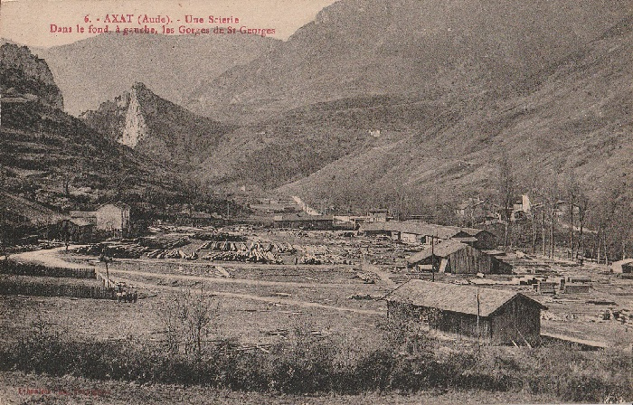
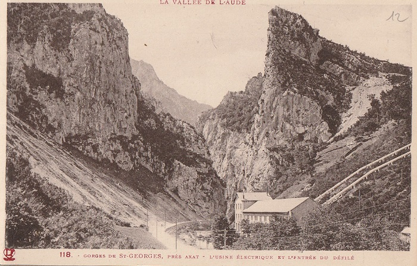
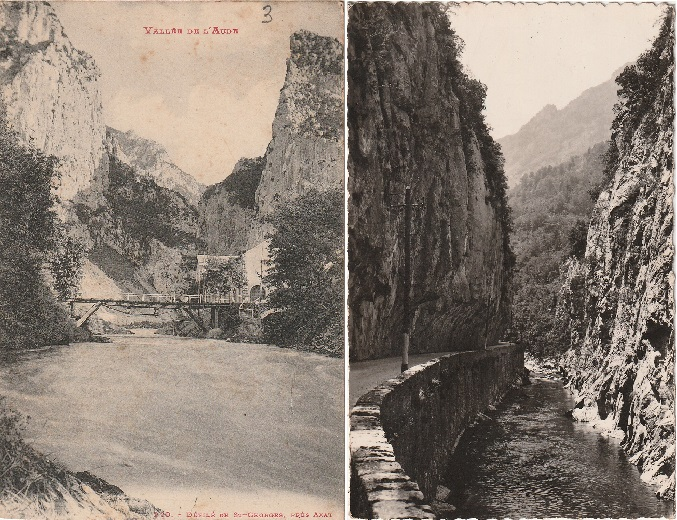
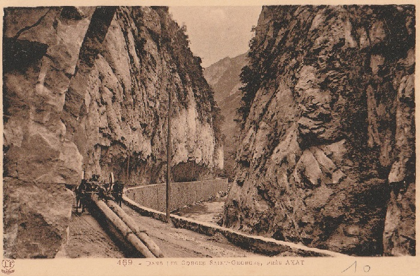
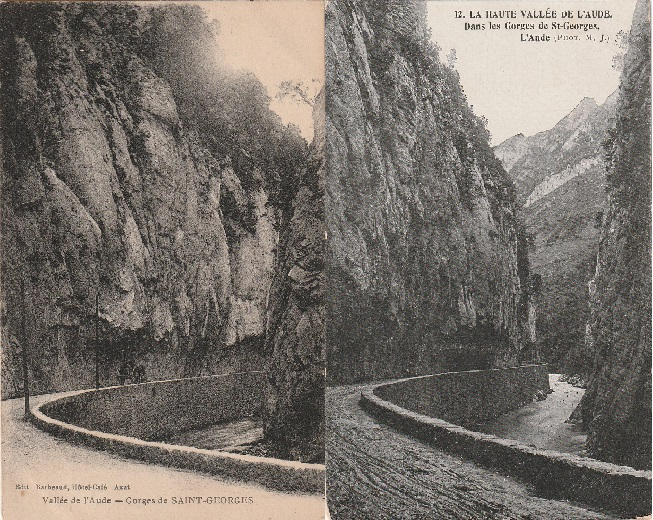
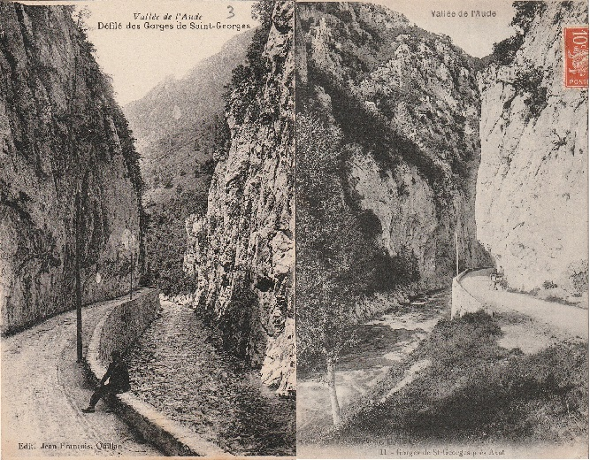
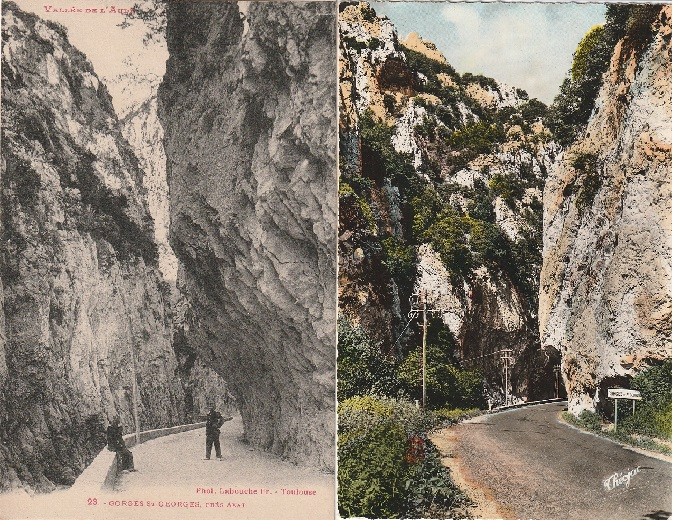
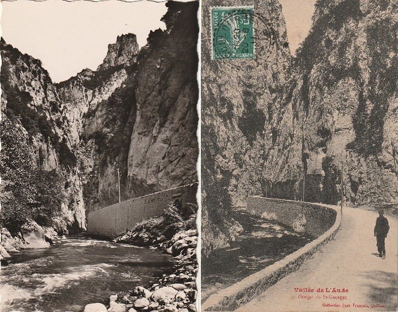
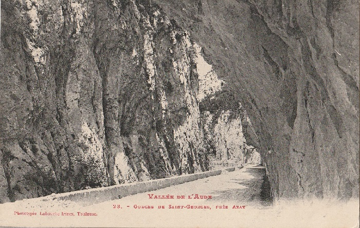
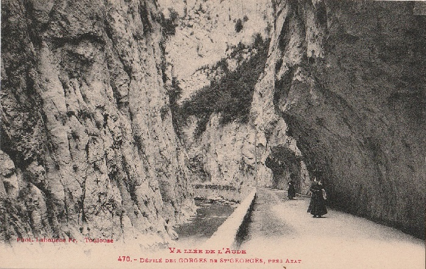
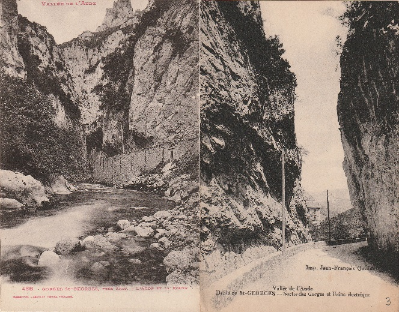


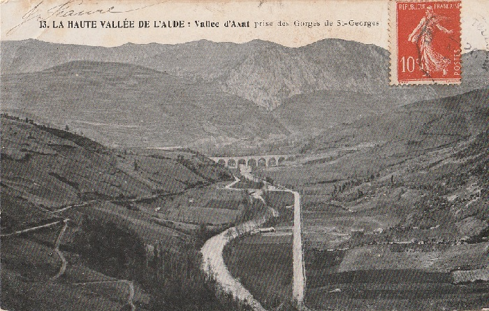


Carnet de cartes Postales Labouche et frères entre 1930 et 1937


Photographies d'Arthur Batut vers 1875 - Collection de l'Espace photographique Arthur Batut/Archives départementales du Tarn


 (Photos publiées sur le facebook de Dominique Arthur Batut ajoutées à mon site avec son accord, information transmise par Bernard Louvet)
(Photos publiées sur le facebook de Dominique Arthur Batut ajoutées à mon site avec son accord, information transmise par Bernard Louvet)
Les photos de ce paragraphe sont issues de © Ministère de la Culture (France), diffusion RMN-GP - cliquer directement sur la photo pour accéder à la notice correspondantes.
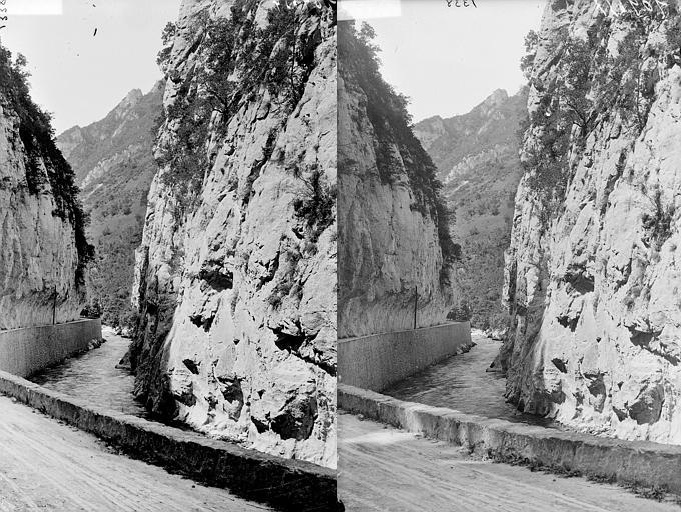
Dans les gorges de Saint-Georges
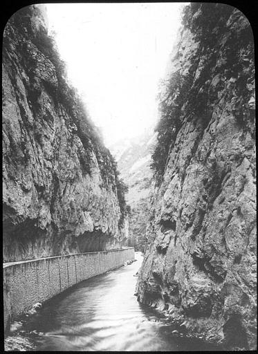
Dans les gorges de Saint-Georges
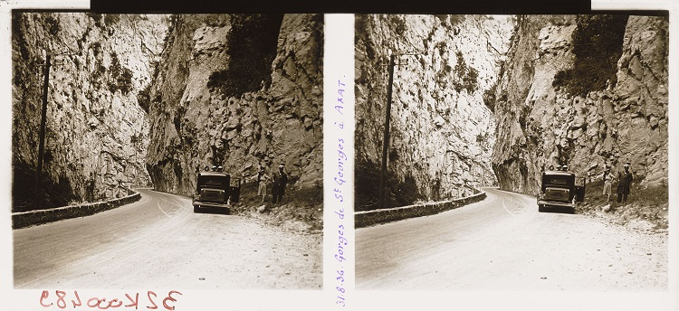
Gorges de Saint-Georges, cinq passagers posant à côté d’une voiture